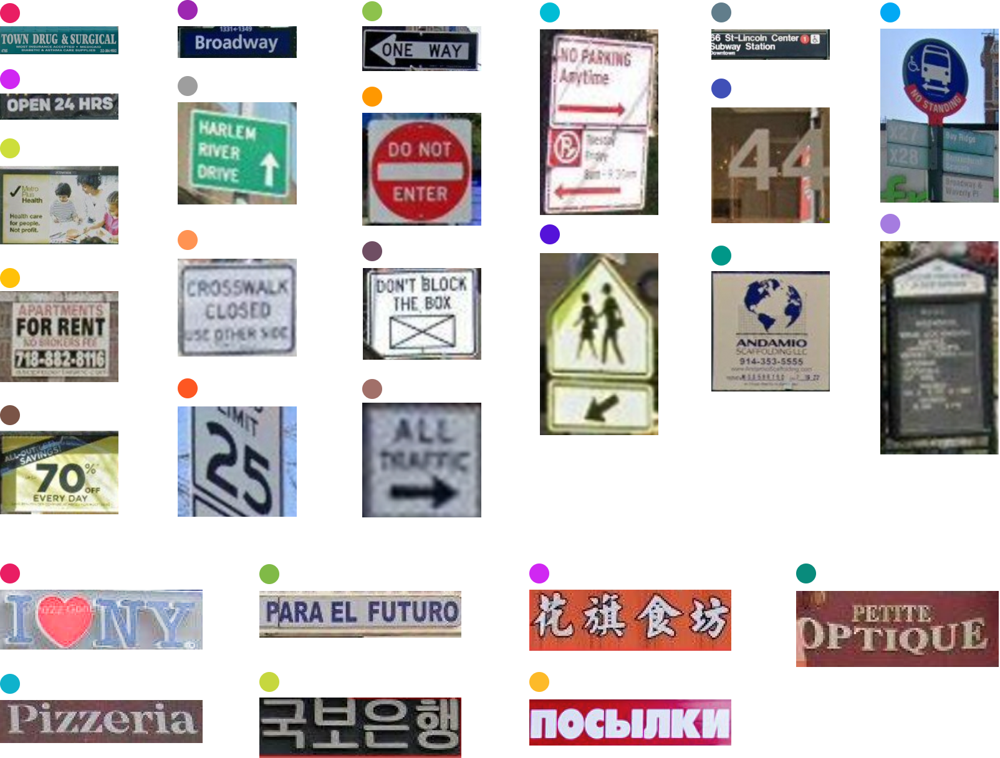
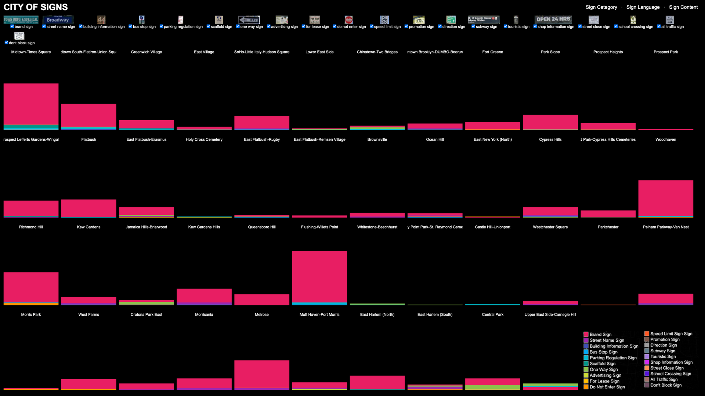
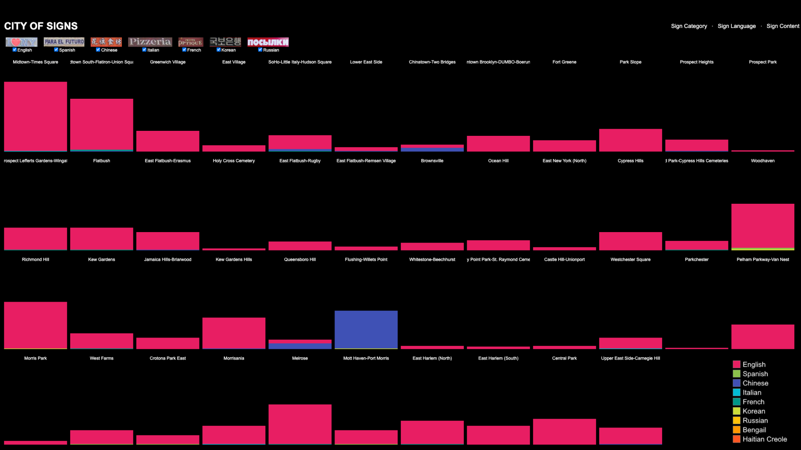
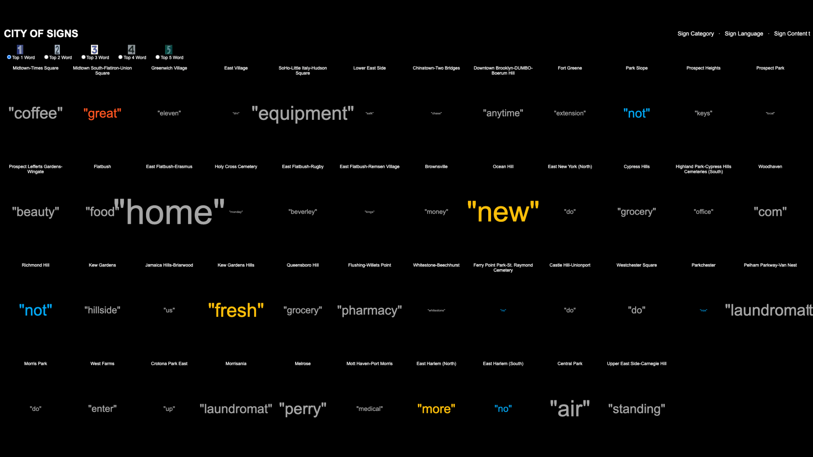

Findings

Signs type & language in NYC
19 signage types were identified in New York City and can be grouped into three main categories. The first group is street signs,
which include Don't Block signs, Do Not Enter signs, and All Traffic signs, etc. The second group consists of business-related
signs, including Shop signs, For rent signs, Promotion signs, etc. The third category is public infrastructure signs, including
Bus stop signs, Scaffolding signs, Subway signs, etc. 7 signage languages were identified, including 6 non-English languages:
Spanish, Chinese, French, Italian, Korean, and Russian.
 Data Visualization Overview
Data Visualization Overview
This analysis provides an overview of the distribution of different signage types across communities and their relationship to demographic factors such as household income, race, and ethnicity. Areas like Midtown, Chinatown, Richmond Hill, and Flushing exhibit greater diversity in signage types and languages, while neighborhoods such as Prospect Park show less diversity, predominantly featuring English shop signs.
Higher-income neighborhoods like Prospect Heights and the Upper East Side tend to have fewer non-English signs, reflecting a more uniform linguistic landscape. In contrast, lower-income areas such as Flatbush and Brownsville display fewer shop signs overall, which are also predominantly in English, with limited representation of non-English languages.
Neighborhoods with predominantly White populations tend to have a wide variety of signage, mostly in English but with occasional Italian influences. Black neighborhoods generally feature fewer signs, with English as the dominant language. Meanwhile, Asian neighborhoods stand out with a diverse range of signage, primarily in Chinese, reflecting the cultural and linguistic makeup of these communities.

Signage Type in Community
To better understand what signage reveals about these neighborhoods, this analysis examines the number and types of signs across 46 neighborhoods. Shop signage, represented in red, indicates levels of commercial activity. Neighborhoods like Midtown and Flushing stand out with a high density of shop signage, highlighting their status as vibrant commercial hubs.
Examining temporary signage—such as “For Lease” and discount signs—provides insights into the transient and informal layers of these neighborhoods, offering information that may not be readily accessible through traditional sources like Google Maps. For example, Midtown South currently shows a high volume of “For Lease” signs, suggesting significant rental turnover or vacant spaces.
By analyzing regulatory signage containing negative phrases like “Do Not,” we can infer the “positivity” or regulatory tone of a neighborhood. For instance, Richmond Hill has a notable concentration of “Do Not” signs, indicating a stricter regulatory environment or specific community challenges.

Signage Language in Community
By filtering out English signage, we can reveal the rich ethnic diversity within each neighborhood. For instance, Flushing and Ocean Hill prominently feature Chinese and Italian signage, respectively, reflecting the cultural identities of their communities. However, there are intriguing exceptions, such as Woodhaven, a predominantly Spanish-speaking neighborhood that also exhibits a significant presence of Korean signage, highlighting unique cultural overlaps.

Signage Content in Community
Analyzing the content of signs and highlighting the most frequently used words in each neighborhood provides valuable insights into the local lexicon. For instance, the word “home” is prevalent in East Flatbush, while “great” is common in Midtown South, and “fresh” appears frequently in Kew Gardens.
Furthermore, by focusing on specific words, we can uncover how communities perceive themselves or wish to be perceived. For example, Flatbush and Brownsville, both less affluent neighborhoods, prominently feature the word “best,” perhaps reflecting efforts to uplift their image and counter negative narratives. Meanwhile, Flushing stands out as the “most lucky” community, a nod to cultural traditions in Chinese communities where concepts of luck and prosperity hold significant importance.
The use of words like “international” and “American” also sheds light on cultural dynamics. For example, the word “international” frequently appears in signage in Chinatown and Flushing. Interestingly, these signs often include Chinese text, such as the furniture company name “荣发” (“flourishing” or “prosperous”), which is simplified to “international” in English to aid comprehension for non-Chinese speakers.
Signage also reflects the economic and commercial landscape of neighborhoods. Flatbush and East Harlem are the “most discount” communities, indicating a prevalence of promotional signage. In contrast, Union Square is marked by “luxury” signs, highlighting its high-end commercial identity. Additionally, neighborhoods like Woodhaven and Richmond Hill show a high occurrence of “opening” signs, suggesting active growth and new opportunities, while Midtown East and East Flatbush feature a significant number of “closing” signs, signaling transitions or economic challenges.